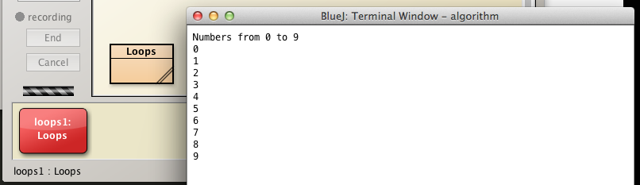
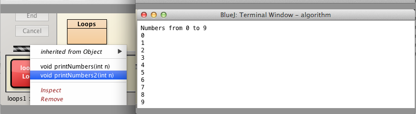
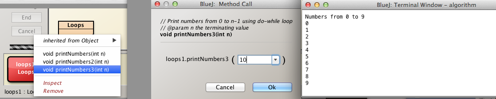
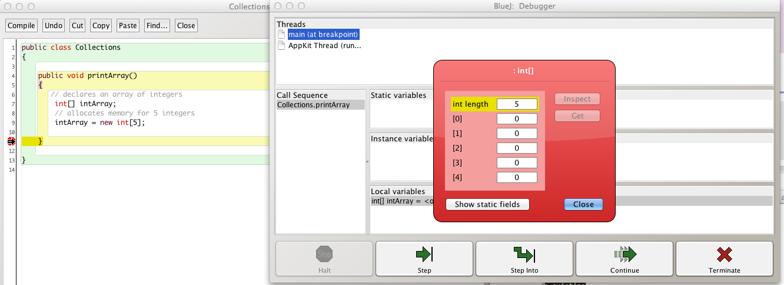
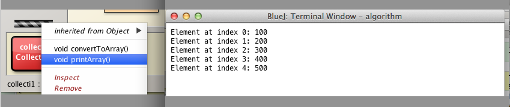
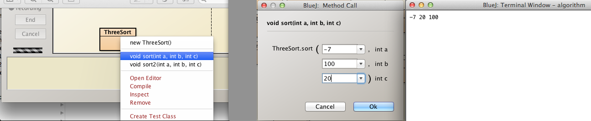
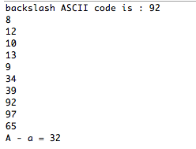

Objectives
Gain further flow control experience. Introduce a very basic sorting algorithm Understand Autoboxing and Unboxing. A brief discussion on precedence of operators presented.
for loop
Create a BlueJ project named algorithm in your workspaceBlueJ/labs/session04 folder.
-
In algorithm create a class named Loops.
-
Replace the auto-generated code in Loops.java with the outer wrapper:
public class Loops
{
}
We shall now write a method, printNumbers to print the numbers from 0 to n-1 using a for loop.
The value of n shall be passed as a parameter.
Here is the method which you should add to the class and then compile and test in the usual manner:
- Instantiate Loops
- Invoke printNumbers on the Loops object
- Use, for example 10, as an actual parameter
- The output is displayed in Figure 1.
/**
* Print numbers from 0 to n-1 using for loop
* @param n the terminating value
*/
public void printNumbers(int n)
{
System.out.println("Numbers from 0 to " + (n - 1));
for(int i = 0; i < n; i += 1)
{
System.out.println(i);
}
}

while loop
We shall now write a method, printNumbers2 to print the numbers from 0 to n-1 using a while loop.
The value of n shall be passed as a parameter.
Here is the method which you should add to the class and then compile and test in the usual manner:
- Instantiate Loops
- Invoke printNumbers2 on the Loops object
- Use, for example 10, as an actual parameter
- The output should be as displayed in Figure 1.
/**
* Print numbers from 0 to n-1 using while loop
* @param n the terminating value
*/
public void printNumbers2(int n)
{
System.out.println("Numbers from 0 to " + (n-1));
int i = 0;
while(i < n)
{
System.out.println(i);
i += 1;
}
}
What, in your opinion, would be the effect of omitting the expression
- i += 1;
from the method above?

do-while loop
Write a method, printNumbers3 to print the numbers from 0 to n-1 using a do-while loop.
The value of n shall be passed as a parameter.
Here is the method which you should add to the class and then compile and test in the usual manner:
- Instantiate Loops
- Invoke printNumbers3 on the Loops object
- Use, for example 10, as an actual parameter
- The output should be as displayed in Figure 1.
/**
* Print numbers from 0 to n-1 using do-while loop
* @param n the terminating value
*/
public void printNumbers3(int n)
{
System.out.println("Numbers from 0 to " + (n-1));
int i = 0;
do
{
System.out.println(i);
i += 1;
}while(i < n);
}

Manipulating arrays
In the algorithm project, create a new class named Collections.
Open the class in the editor and replace autogenerated code with the outer class wrapper:
public class Collections
{
}
Write a method named printArray as follows:
public void printArray()
{
// declares an array of integers
int[] intArray;
}
What we have done here is simply declared the an array of integers.
Add this method to the class
- Compile Collections
- Create a Collection object
- Invoke printArray.
There should be no observable behaviour. Why not?
Place a breakpoint on the closing curly brace of the method printArray and then invoke the method.
- The program will halt at the breakpoint.
- Double click on the expression int[] intArray = <object reference> in the Local Variables panel towards the bottom of the BlueJ: Debugger window.
- The object state will be revealed in the inspection window as shown in Figure 1.
- As expected, the value of each element in the integer array is zero.
- This is so because instance arrays are initialized by default to zero when declared.

We will now proceed to separately initialize each element of the array by extending the method as follows:
public void printArray()
{
// declares an array of integers
int[] intArray;
// allocates memory for 5 integers
intArray = new int[5];
//initialize each element
intArray[0] = 100;
intArray[1] = 200;
intArray[2] = 300;
intArray[3] = 400;
intArray[4] = 500;
}
Add the following code to display the array elements:
System.out.println("Element at index 0: " + intArray[0]);
System.out.println("Element at index 1: " + intArray[1]);
System.out.println("Element at index 2: " + intArray[2]);
System.out.println("Element at index 3: " + intArray[3]);
System.out.println("Element at index 4: " + intArray[4]);
Compile, create an object and invoke the method again.
The output should match that shown in Figure 2.

Order check
Check if three integers are ordered, either ascending or descending.
For example
- The following are ordered:
- 4, 7, 35
- 60, 20, -5
- The following are unordered:
- 7, 4, 35
Create a class named OrderCheck3 in the algorithm project and replace the auto-generated code with the class wrapper:
public class OrderCheck3
{
}
Add three fields to represent the three integers that will be checked for order:
private int a;
private int b;
private int c;
Add the constructor:
/**
* Constructor
* @param a an integer
* @param b an integer
* @param c an integer
*/
public OrderCheck3(int a, int b, int c)
{
this.a = a;
this.b = b;
this.c = c;
}
The approach to check if the attributes are ordered is straightforward:
- If the values are ordered ascending then
- a will be less than b and
- b will be less than c
- This translates to the following code
- a < b && b < c
- If the values are ordered descending then
- a will be greater than b and
- b will be greater than c
- This translates to the following code
- a > b && b > c
- This translates to the following code
The method isOrdered therefore is as follows:
public boolean isOrdered()
{
return (a < b && b < c) || (a > b && b > c);
}
Add this to the class, compile and test.
Question: what would be the consequence of replacing the return statement with the following?
- return (a < b && b < c) && (a > b && b > c);
Basic sorting
In algorithm project create a class ThreeSort.
- The purpose of the class is to sort three integers into ascending order.
- The integers will be provided as parameters to the constructor.
Here is the class wrapper:
public class ThreeSort
{
}
We shall now write method to sort the arguments.
- The method signature is public void sort().
- We shall use the Math.min and Math.max methods.
Here is the approach we adopt:
- Use Math.min to discover the smallest of the three numbers.
- Use Math.max to discover the largest of the three.
- The third number will be the middle number.
Here is the method.
- You will, no doubt, observe that discovering the middle number is the most difficult part to understand.
public static void sort(int a, int b, int c)
{
// determine smallest and largest of three
int smallest = Math.min(a, Math.min(b, c));
int biggest = Math.max(a, Math.max(b, c));
//discover the middle number
int tmp1 = Math.min(Math.max(a, b), Math.max(a, c));
int tmp2 = Math.min(Math.max(a, b), Math.max(b, c));
int middle = Math.min(tmp1, tmp2);
System.out.println("" + smallest + " " + middle + " " + biggest);
}
Notice that we include the static keyword in the method signature.
- This means that the method is invoked as follows:
- Select the ThreeSort class diagram in the BlueJ: algorithm
- Do not create a ThreeSort object
- Invoke void sort(...)
- Select the ThreeSort class diagram in the BlueJ: algorithm
Because the method is static, the invocation is made thus:
- ThreeSort.sort(...);
- Were the keyword static omitted then the following steps would be required to invoke the method:
- ThreeSort obj = new ThreeSort();
- obj.sort(...);
- Were the keyword static omitted then the following steps would be required to invoke the method:
Compile the class and test with some data in the usual manner.
See Figure 1 for typical input and output. Notice the absence of a ThreeSort object on the object bench.

Encoding
- Create a new BlueJ project named Encoding.
- Create a new class Encode in this project
- Open Encode in the editor and replace the contents with the following:
public class Encode
{
public static void encode() {
int decimal = 65;
int hexadecimal = 0x41;
char character = 0x41;
char character2 = 65;
System.out.println("decimal : " + decimal);
System.out.println("hexadecimal : " + hexadecimal);
System.out.println("character : " + character);
System.out.println("character2 : " + character2);
}
}
Invoke the static method encode and observe the output as depicted in Figure 1.

Here is an explanation of what's happening:
- We create a decimal variable with value 65 (base 10).
- We create a hexadecimal variable with value 41 (base 16)
- Note the 0x that precedes the 41: this is how a hexadecimal number is expressed in Java.
- Had we simply written int hexadecimal = 41; then the decimal number 41 would be stored in the variable hexadecimal.
- 41 base 16 is the same as 65 base 10
- Check this in the online calculator.
- Note the 0x that precedes the 41: this is how a hexadecimal number is expressed in Java.
- Next we create a char variable, character and assign the hexadecimal value 0x41 to it.
- char primitive Java data type is a single 16-bit Unicode character. It has a minimum value of 0 and a maximum value of 65,535 inclusive.
- Check the ASCII table here or in Figure 2 below and note that the code for A is 65 (base 10), 41 (base 16).
- Then we create a second char variable, character2 and assign the decimal value 65 to it.
We conclude the method by printing the values of the four variables (Figure 1).
Study the values in Figure 1. In particular note the following:
- The variable names have been chosen so as to be self-documenting
- No other significance attaches to the names
- The output values of both the variables decimal and hexadecimal are the same
- Clearly System.out.println outputs integers in base 10
- There are a number of methods to print the output in hexadecimal such as:
- System.out.println(Integer.toHexString(number));
- Try it: add the following lines to the method, invoke and observe the output:
System.out.println(Integer.toHexString(hexadecimal));
System.out.println(Integer.toHexString(0x41));
System.out.println(Integer.toHexString(65));

Characters
Add the following method to Encoding:
public static void characterExample()
{
/*
char backspace = '\b';
char formfeed = '\f';
char newline = '\n';
char retrn = '\r';
char tab = '\t';
char doublequote = '\"';//for string constants
char singlequote = '\'';//for character constants
*/
char backslash = '\\';
char lettera = 'a';
char letterA = 'A';
System.out.println("backslash ASCII code is : " + (int)backslash);
char[] chars = {'\b', '\f','\n','\r', '\t','\"', '\'', '\\', 'a', 'A' };
for(char c : chars)
{
System.out.println((int)c);
}
System.out.println("A - a = " + (lettera - letterA));
}
Invoke characterExample. The output is depicted in Figure 1.

Here is a brief explanation of the above code:
- Outline documentation is provided in the block comment
- With the exception of a and A, the characters, if included as arguments in System.out.print are not visibly represented on the screen. That is, they are non-printable characters.
- chars such as \b and \r not always correctly implemented in IDEs. See Here
- char[] chars is an array of primitive char types
- The underlying integer values of this array of char types is displayed in the output as shown in Figure 1
Exercises
Exercise 1
Write a method named printNumbersReverse that prints the numbers between 0 and n-1 inclusive in descending (reverse) order.
Use as a model the existing method printNumbers in Loops class.
Use a for loop.
Here is the method signature:
- public void printNumbersReverse(int n)
Here is the existing printNumbers method:
/**
* Print numbers from 0 to n-1 using for loop
* @param n the terminating value
*/
public void printNumbers(int n)
{
System.out.println("Numbers from 1 to " + n);
for(int i = 0; i < n; i += 1)
{
System.out.println(i);
}
}
Exercise 2
Write a method named printNumbersReverse2 that prints the numbers between 0 and n-1 inclusive in descending (reverse) order.
Use as a model the existing method printNumbers2.
Use a while loop.
Here is the method signature:
- public void printNumbersReverse2(int n)
Exercise 3
Write a method named printNumbersReverse3 that prints the numbers between 0 and n-1 inclusive in descending (reverse) order.
Use as a model the existing method printNumbers3.
Use a do-while loop.
Here is the method signature:
- public void printNumbersReverse3(int n)
Exercise 4
Add a method to the Collection class named convertToArray.
- The method signature is public void convertToArray().
- The purpose of the method is to demonstrate the usefulness of using an array.
Here is the initial method. Add this to the Collection class.
- Compile
- Create Collection object on the object bench
- Invoke convertToArray
- The output should correspond to that shown in Figure 1
public void convertToArray()
{
double d1 = 100.01;
double d2 = 311.64;
double d3 = 206.36;
double d4 = 721.64;
double d5 = 951.56;
System.out.println("Value of d1 is " + d1);
System.out.println("Value of d2 is " + d2);
System.out.println("Value of d3 is " + d3);
System.out.println("Value of d4 is " + d4);
System.out.println("Value of d5 is " + d4);
}

The exercise comprises the following:
- Replace the double variables with a single double array.
- Example: double[] arDouble
- Use the new operator appropriately
- Initialize the array with the same values as for the individual variables.
- Use a for loop to print the array.
Exercise 5
Repeat exercise 4 but using a for-each loop to display the values.
- Use a new method with signature public void convertToArray2()
Exercise 6
Repeat exercise 4 but using a while loop to display the values.
- Use a new method with signature public void convertToArray3()
Exercise 7
Repeat exercise 4 but using a do-while loop to display the values.
- Use a new method with signature public void convertToArray4()
Exercise 8 (Advanced)
Consider this list of primitive type double values:
double d1 = 100.01;
double d2 = 311.64;
double d3 = 206.36;
double d4 = 721.64;
double d5 = 951.56;
- Store these values in an ArrayList.
- Warning: primitives cannot be stored directly in an ArrayList.
- ArrayList<double> : incorrect
- ArrayList<Double> : correct
- Warning: primitives cannot be stored directly in an ArrayList.
Use a method with signature public void convertToArrayList()
Print out the list of elements using an iterator to traverse the ArrayList.
Exercise 9
Write a class OrderCheck4 using the class OrderCheck3 that was developed in the lab as a model.
The purpose of the class is to:
- Accept 4 integers as constructor parameters
- Provide a method to check if the parameters are ordered
- The signature of the method is
- public boolean isOrdered()
- The signature of the method is
Exercise 10 (Advanced)
- Write a different version of the sort method in ThreeSort.
- Name the method sort2.
- Use a similar signature to sort, namely:
- public static void sort2(int a, int b, int c)
Here is the skeleton of the method: you are asked to complete the missing blocks.
public static void sort2(int a, int b, int c)
{
if(a < b && a < c) //then a is smallest
{
if(b < c)// sorted order is a b c
{
System.out.println("" + a + " " + b + " " + c);
}
else //a c b
{
System.out.println("" + a + " " + c + " " + b);
}
}
else if (...) // then b is smallest
{
if(...) // sorted order is b a c
{
...
}
else// sorted order is b c a
{
...
}
}
else if (...) // then c is smallest
{
if(a < b) // sorted order is c a b
{
...
}
else// c b a
{
...
}
}
}
Exercise 11
In the algorithm project, create a new class named TestThreeSort.
Add the following method:
public static void test_sort()
{
System.out.println("Testing ThreeSort.sort()");
System.out.println("Sorting Sorted");
System.out.print(" "+4 +" "+5+" "+6+" "); ThreeSort.sort(4, 5, 6);
System.out.print(" "+4 +" "+6+" "+5+" "); ThreeSort.sort(4, 6, 5);
System.out.print(" "+5 +" "+4+" "+6+" "); ThreeSort.sort(5, 4, 6);
System.out.print(" "+5 +" "+6+" "+4+" "); ThreeSort.sort(5, 6, 4);
System.out.print(" "+6 +" "+4+" "+5+" "); ThreeSort.sort(6, 4, 5);
System.out.print(" "+6 +" "+5+" "+4+" "); ThreeSort.sort(6, 5, 4);
}
Invoke the test_sort method.
Satisfy yourself that the output is correct.
Exercise 12
- Write a similar method to that in Exercise 9 to test the method sort2.
- Name it test_sort2.
- Invoke test_sort2.
- Compare the output to that from test_sort.
- The outputs should be the same.
Exercise 13
Study both methods in ThreeSort: sort and sort2.
- Which method
- is easier to understand and explain to others?
- would you prefer to maintain?
- List any observations you may have regarding the class and its methods.
The methods referred to below should be included in the Encode class
Exercise 14
Write a method to determine if 2 characters are equal.
- The signature is public static boolean isEqual(char ch1, char ch2)
- return true if ch1 is the same as ch2
- otherwise return false
- Example: if ch1 is a and ch2 is a return true.
- Example: if ch1 is a and ch2 is A return false.
Exercise 15
Write a method to compare 2 characters.
- The signature is public static int compareTo(char ch1, char ch2)
- return -1 if the Unicode value of ch1 is less than that of ch2
- return 0 if the Unicode value of ch1 is equal to that of ch2
- return 1 if the Unicode value of ch1 is greater than that of ch2
Exercise 16
Write a method to determine if 2 characters are equal, ignoring case.
- The signature is public static boolean isEqualIgnoreCase(char ch1, char ch2)
- return true if ch1 is the same as ch2 ignoring case
- Example: if ch1 is a and ch2 is a return true
- Letter: a - z, A - Z
- Example: if ch1 is a and ch2 is a return true
- return true if ch1 is the same as ch2 ignoring case
-
Assume that ch1 and ch2* are letters.
-
Thus, for example, if ch1 is A and ch2 is a then return true.
Exercise 17
Write a method to determine if a character is either a letter or a digit.
- The signature ispublic static boolean isLetterOrDigit(char ch)
- return true if ch is either a letter or a digit
- Letter: a - z, A - Z
- Digit: 0 - 9
- return true if ch is either a letter or a digit
Exercise 18
Write a method to convert a character as follows:
- if the character is lower case convert it to upper case
- if the character is upper case convert it to lower case
- return the converted letter
- Example: if ch is a return A
- Example: if ch is A return a
- return the converted letter
- The method signature is public static char toggleCase(char ch).
- Assume that ch is a letter.
- Use methods from Character class